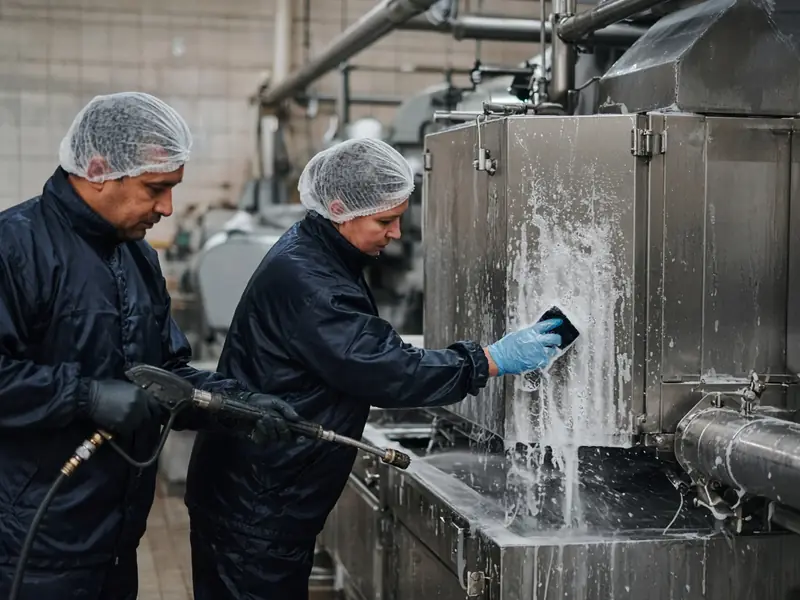

Sector · Voeding
Schoonmaak voor voeding.
In de voedingsindustrie hoort de schoonmaak bij uw voedselveiligheid. V Clean voert ze uit volgens uw reinigingsplan en uw HACCP-procedures.
Wat we vaak horen
Uw uitdagingen
Hygiëne als wettelijke plicht
Voedingsbedrijven werken met een autocontrolesysteem op basis van HACCP, onder toezicht van het FAVV.
Reinigen tussen productieruns
De tijd is beperkt en de lijn moet daarna weer veilig kunnen opstarten.
Correct werken met producten
Schuim, desinfectie en spoelen in de juiste volgorde, met de juiste middelen.
Onze aanpak
- Werken volgens uw reinigings- en desinfectieplan (HACCP)
- Schuim- en hogedrukreiniging van lijnen en ruimtes
- Hygiëne- en kledijregels van uw site vooraf aangeleerd
- Registratie van wat, wanneer en door wie, ter ondersteuning van uw audits
- Kwaliteitsrapport met foto's na elke interventie
Zo starten we
- Intake van 5 minuten Online, zonder verplichtingen.
- Plaatsbezoek Uw aanspreekpunt ([IN TE VULLEN: naam aanspreekpunt]) bekijkt de site.
- Voorstel op maat Een duidelijke offerte voor de opdracht.
- Start Uw vaste V Clean-ploeg begint, ingewerkt op uw regels.
Certificaten & verzekering: [IN TE VULLEN: HACCP-opleiding van de ploeg] · Verzekering BA: [IN TE VULLEN]
Benieuwd wat V Clean voor uw site kan doen?
Intake in 5 minuten. Gratis en vrijblijvend plaatsbezoek. Antwoord binnen 1 werkdag.